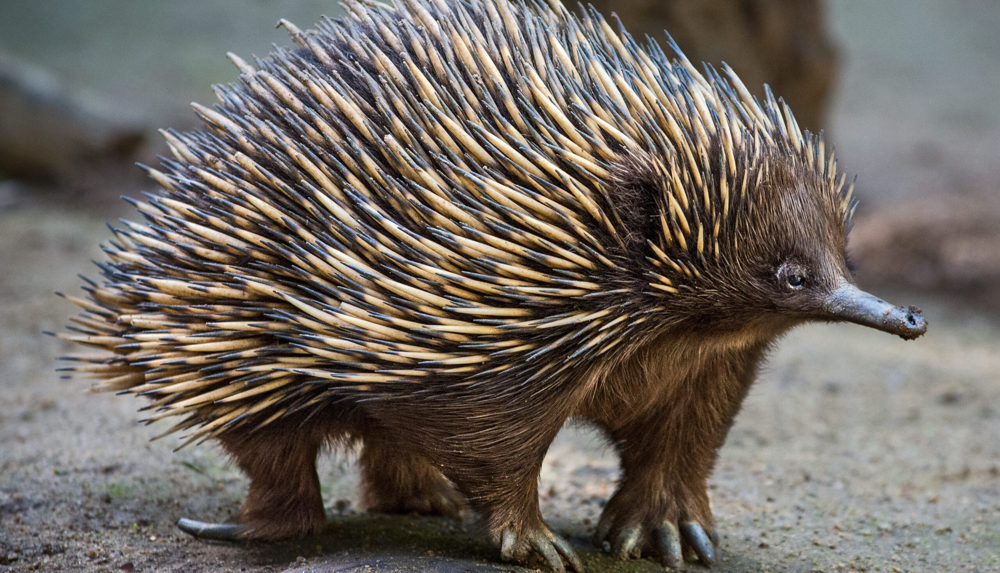
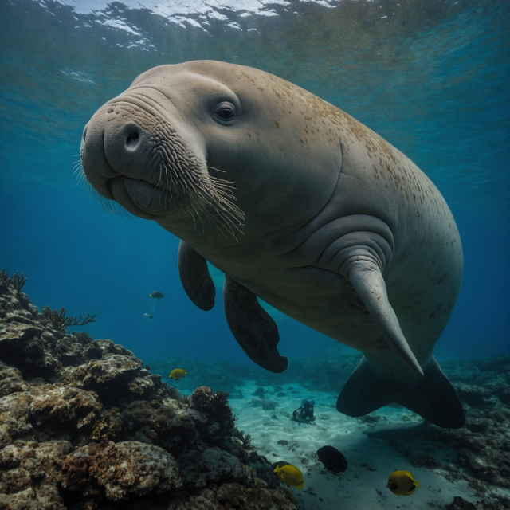
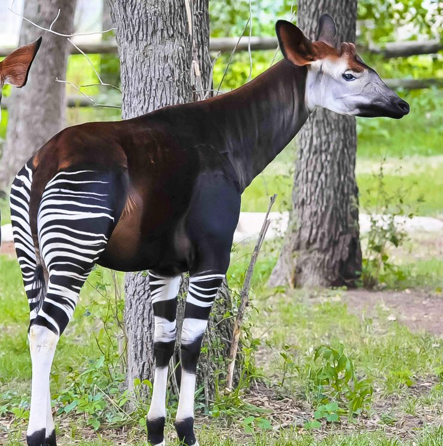
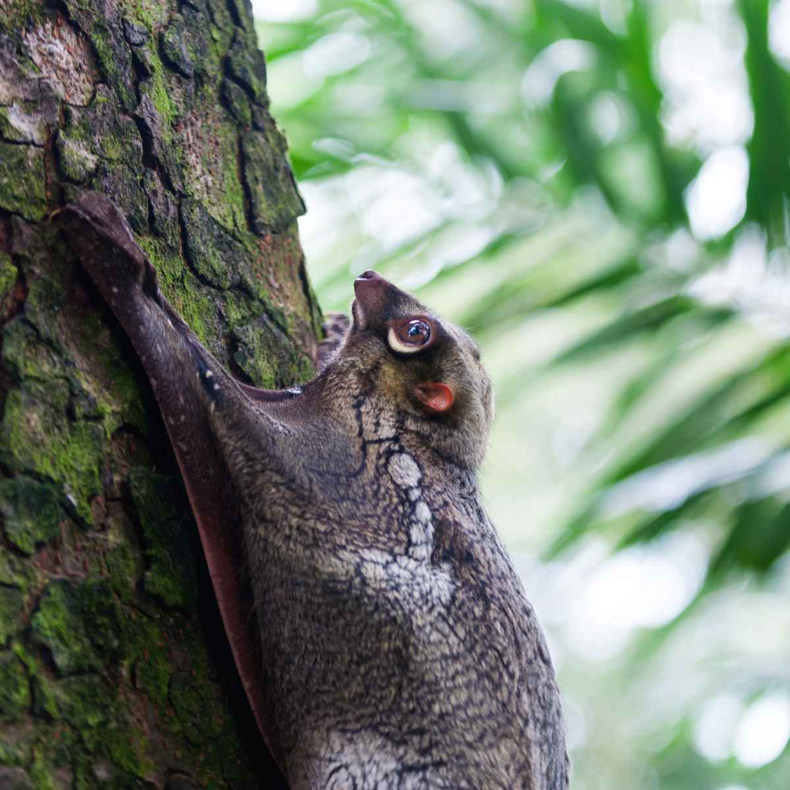

(лат. Galeopterus variegatus) ...

(лат. Ambystoma mexicanum) ...

(лат. Phasmatodea) ...

(лат. Ornithorhynchus anatinus) ...
Фенек (Vulpes zerda)
Фенек, миниатюрная лисица пустынных регионов Северной Африки,
является одним из самых узнаваемых и очаровательных животных благодаря
своим непропорционально огромным ушам,
которые не только служат для сверхчувствительного слуха,
позволяющего улавливать малейшие движения добычи под песком,
но и выполняют функцию терморегуляции,
отводя излишки тепла от тела в условиях палящего солнца.
Этот зверек, размером не больше домашней кошки,
обладает густым мехом песочного цвета,
защищающим его от перепадов температур,
и невероятной прыгучестью, что в совокупности с ночным образом жизни
делает его идеально приспособленным для выживания в суровых условиях Сахары,
где он питается всем доступным — от насекомых и мелких позвоночных
до яиц, плодов и кореньев.

(лат. Suricata suricatta) ...

(лат. Budorcas taxicolor) ...